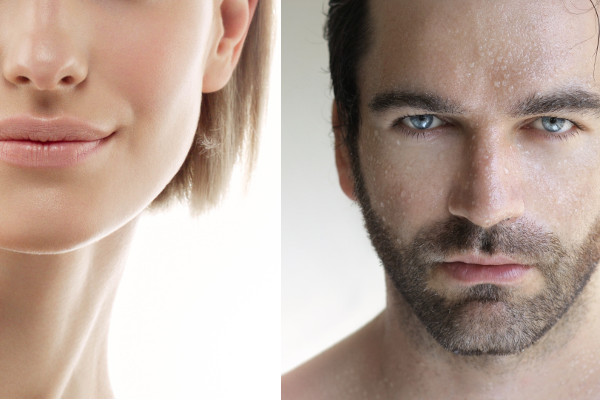
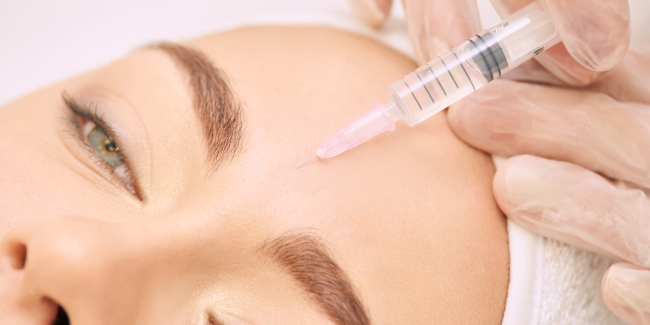
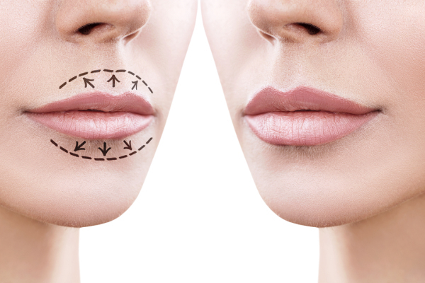

Ácido Hialurónico
El ácido hialurónico en el envejecimiento cutáneo
Las arrugas faciales aparecen con el paso de los años, dado básicamente por factores genéticos y factores ambientales como el stress, hábitos, alimentación, la acción del sol o el consumo de cigarrillo los cuales acentúan y aceleran la profundización de las mismas.
En el proceso de envejecimiento de la piel, los niveles de ácido hialurónico disminuyen paulatinamente. Esto ya comienza a verse en personas relativamente jóvenes y se acentúa con los años.
El relleno de las arrugas con ácido Hialurónico está especialmente indicado en pacientes relativamente jóvenes que no tienen flaccidez cutánea evidente. Los pacientes mayores, con flaccidez cutánea, no se benefician de manera evidente con el Hialuronico, sino que mejoran con procedimientos quirúrgicos solos o asociados con rellenos.
Tipos de rellenos cutáneos, cuáles recomendamos y cuáles no
Existen varios productos que se han utilizado y se utilizan para rellenar las arrugas, surcos y líneas de expresión.
Estos productos se pueden dividir en 2 grandes grupos: rellenos permanentes y rellenos transitorios.
A primera vista suena atractivo que un relleno sea permanente. Pero los rellenos permanentes tienen diferentes componentes como el polimetilmetacrilato, la silicona liquida o la hidroxiapatita de calcio, los cuales, por no ser reabsorbibles, tienen un alto índice de complicaciones debido a que el organismo, al englobarlos puede producir granulomas y bultos que son muy difíciles de tratar. La silicona líquida, en algunos casos puede migrar deformando el sector que se trató. Algunos productos también contienen colágeno, pero se trata de colágeno de origen vacuno, siendo las reacciones alérgicas bastante frecuentes. Por ello, nosotros preferimos no aplicar estos productos.
Dentro de los rellenos transitorios hay varios productos, pero el más destacado es el ácido hialurónico.
Qué es el Ácido Hialurónico?
El ácido hialurónico, del punto de vista molecular, es un polisacárido (molécula similar al azúcar), una sustancia natural, biodegradable, presente en el organismo humano, muy abundante a nivel de la piel, que como dijimos, disminuye con el paso de los años.
Al ser un producto natural, sintetizado, casi idéntico al del humano, prácticamente no tiene potencial antigénico, son muy raras las reacciones alérgicas al producto y menos aun la formación de anticuerpos anti-hialurónico.
Existen varias marcas de muy buena calidad que son sintetizadas para uso médico-cosmético. Cada marca tienen diferentes características de ácido Hialurónico, para diferentes aplicaciones. Está disponible en jeringas estériles que se utilizan en el momento de la aplicación.
El producto es un gel inyectable cuya acción es devolver el volumen y la elasticidad a la piel, fundamentalmente en los sectores donde se encuentran arrugas profundas o visibles lo que genera que estas se suavicen y se atenúen.
El hecho de ser biodegradable y su efecto ser transitorio, si bien puede parecer una desventaja en realidad es una gran ventaja. Prácticamente no producen granulomas y durante el proceso de reabsorción, se ha visto que promueven en el sitio, el depósito de colágeno nativo del propio organismo.
Su efecto dura aproximadamente de 6 a 8 meses y se recomienda una serie de 3 a 6, aplicaciones, separadas por aproximadamente 8 a 10 meses, para tener efectos duraderos.
Como se aplica el Ácido Hialurónico?
La técnica consta de la inyección de este gel debajo de la dermis o dentro de ella, a nivel de las líneas de expresión y arrugas.
Este procedimiento lo realizamos utilizando previamente anestesia tópica para mejor confort del paciente.
En que áreas se puede aplicar el Ácido Hialurónico?
Se puede utilizar en cualquier parte de la cara, tanto en la frente, entrecejo y patas de gallo, así como también en las mejillas, surco nasogeniano, arrugas peribucales y los labios.
En los tercios superior y medio de la cara puede ser un excelente complemento a la toxina botulínica.
En el tercio inferior de cara, es decir, en las mejillas, surco nasogeniano, surcos peribucales y labios es el estándar de oro.
A nivel de los labios nuestra filosofía es colocar una cantidad justa y necesaria para restablecer la turgencia, un mínimo de volumen y la luminosidad de los labios. Evitamos la inyección exagerada que determina un aumento exagerado y la distorsión de la forma y las proporciones naturales. Nuestra filosofía es que, todo lo que se aleja de lo natural no es estético.
Por otra parte, pensamos que el secreto radica en realizar estos procedimientos de forma proporcionada, sutil y armoniosa, evitando los rasgos exagerados y que no sea completamente evidente que se realizó un procedimiento.
Cuidados posteriores
Inmediatamente posterior al tratamiento puede aparecer hinchazón en la zona aplicada, especialmente en los labios, aunque es menor en otras áreas como la frente, patas de gallo o mejillas. Esa inflamación se trata con hielo y anti-inflamatorios y dura fundamentalmente 3 a 4 dias, quedando el resultado definitivo luego de 10 dias.
Pueden aparecer algunos moretones que se pueden ocultar con maquillaje. Inmediatamente posterior a la aplicación de acido hialurónico se pueden observar algunas arrugas muy levemente sobre corregidas, por lo que recomendamos masajes compresivos suaves durante los primeros días para completar de homogeneizar el producto debajo de la piel.
Ácido Hialurónico
Rejuvenecimiento facial. Tratamiento de las arrugas faciales. Aumento de labios
Ver Video